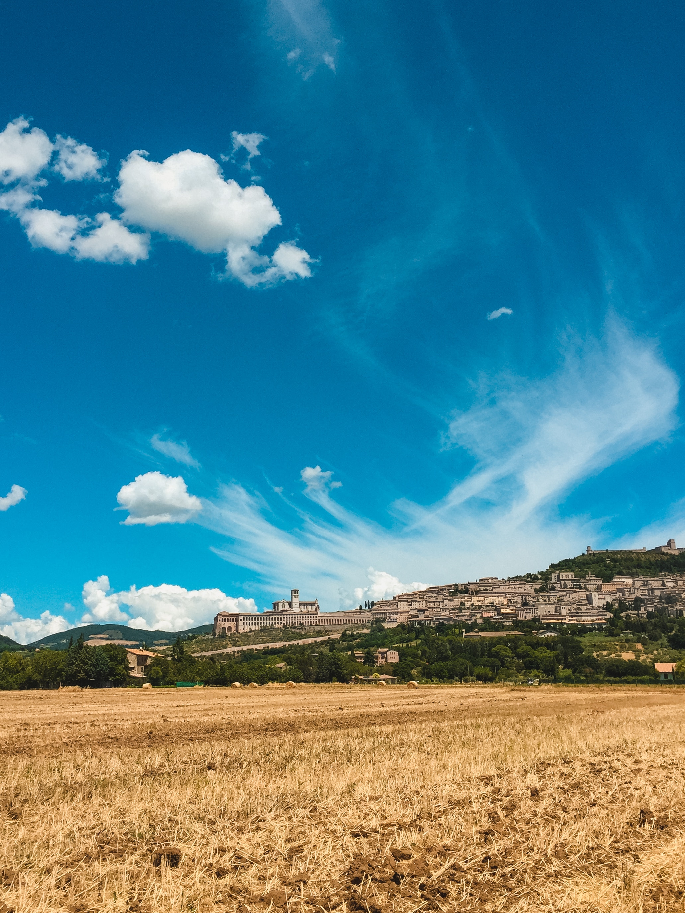

四年 02.2017 种类: 反思&日志. 夜深人静。 一人穿着单薄的外套，伫立在门外的一盏灯下。点点星光给这 夜色披上了一缕薄纱。月不知躲在哪朵云后，隐匿起光芒。四年了，我来美国已经 四年了。 阅读更多
最美四月天 05.2017 种类: 反思&日志. 初春的四月，春天的步伐停留在了四月，一年中我最喜歡的月份。不同於三月百花 齊放的奼紫嫣紅，四月的和風細雨細膩地滋潤著千樹萬樹。樹枝上的葉子從 點點枝椏悄悄地茂盛。不經意間抬頭，清新的綠色，湛藍的天空，和潔白的 遊雲讓我駐足欣賞。在我最喜歡的月份中，我參加了避靜，也度過了復活節。 阅读更多
梦回欧洲 07.2017 种类: 反思&日志s. 偶然看到手机里的日期，现在正值七月底，我的思绪又回到了一年之前。而打开 Facebook，许多参加世青节的朋友又发了些 照片纪念一年前的难忘时光。记得上一次较重的感冒正是在一年前的欧洲， 而这个时候，感冒又 “适时地” 回到我身上，提醒我 2016 年的夏天，那个愉快而又难忘的旅行已经过去一年了 阅读更多
 亚西西游记 09.28.2016 种类: 反思&日志. 2016年的夏天，欧洲之行去的城市实在是太多了，独特又美丽的城市也是比比皆是。亚西西只不过是一座坐落在山间的小城。它没有多么宏伟的建筑，甚至商业风格已经侵入这座本属于平静朴素的小城。然而，当我在山腰眺望远方的时候，我看到的，是另一种海阔天空，精致山河。 阅读更多